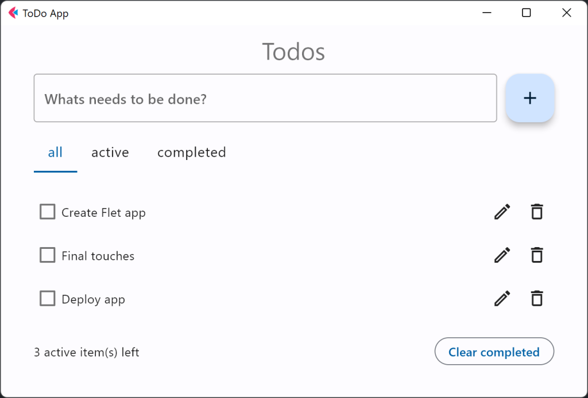
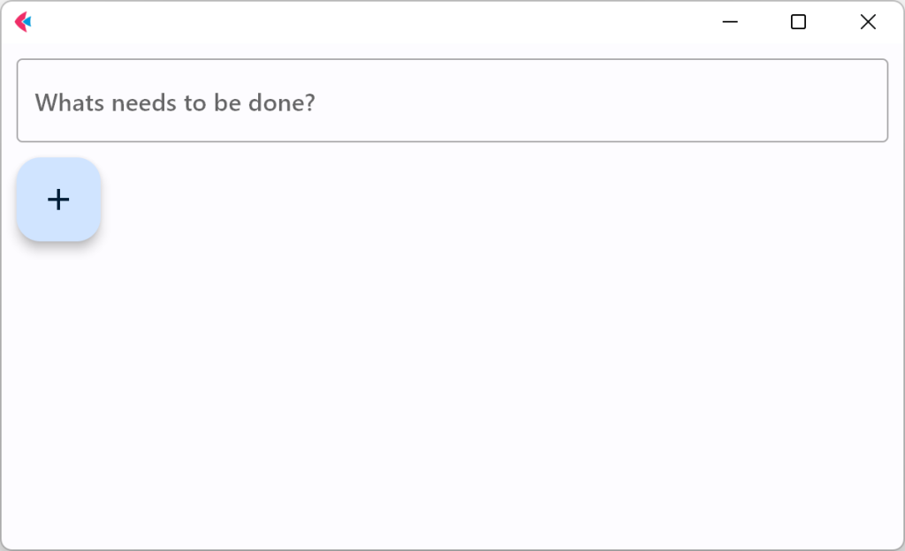
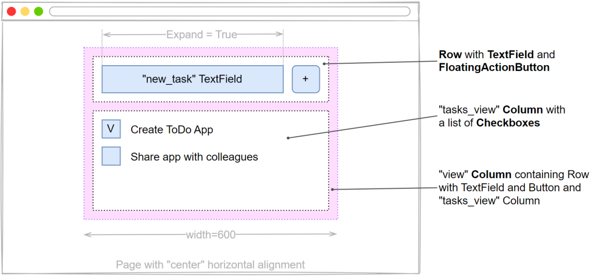
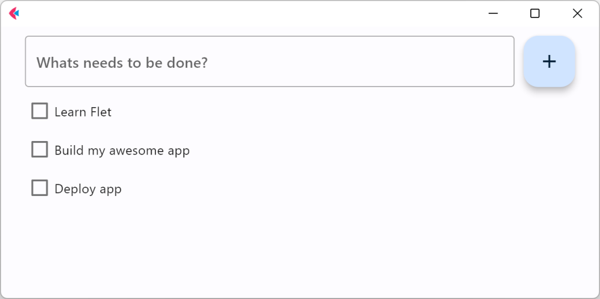
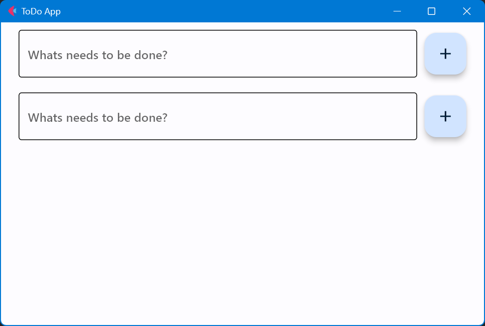
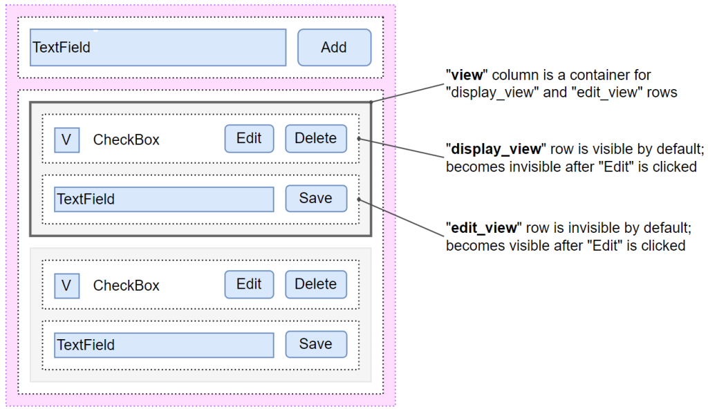

介绍 这个是Flet官网上的第一个Demo。地址：Create To-Do app in Python with Flet | Flet
在线演示：ToDo App (flet-todo.fly.dev)
github完整代码：examples/todo.py at main · flet-dev/examples (github.com)

Todo App整体效果
环境准备 环境参考：Flet，一款基于Python的跨平台前端框架
开始 创建todo.py文件，实现基本页面：
1 2 3 4 5 6 7 8 9 10 11 12 13 14 import flet as ftdef main (page: ft.Page ): def add_clicked (e ): page.add(ft.Checkbox(label=new_task.value)) new_task.value = "" page.update() new_task = ft.TextField(hint_text="Whats needs to be done?" ) page.add(new_task, ft.FloatingActionButton(icon=ft.icons.ADD, on_click=add_clicked)) ft.app(target=main)
页面通过ft.app(target=main)启动，main函数为页面主函数，页面内容通过page.add()函数添加。
ft.TextField()用来实现输入框，hint_text为提示文字。
ft.FloatingActionButton()实现浮动按钮功能。

运行
页面布局 对页面布局进行美化。

布局设计
使用Row和Column进行布局，Row是用于将其子控件水平放置在页面上的控件，Column是用于将其子控件垂直放置在页面上的控件。
1 2 3 4 5 6 7 8 9 10 11 12 13 14 15 16 17 18 19 20 21 22 23 24 25 26 27 28 import flet as ftdef main (page: ft.Page ): def add_clicked (e ): tasks_view.controls.append(ft.Checkbox(label=new_task.value)) new_task.value = "" view.update() new_task = ft.TextField(hint_text="Whats needs to be done?" , expand=True ) tasks_view = ft.Column() view=ft.Column( width=600 , controls=[ ft.Row( controls=[ new_task, ft.FloatingActionButton(icon=ft.icons.ADD, on_click=add_clicked), ], ), tasks_view, ], ) page.horizontal_alignment = ft.CrossAxisAlignment.CENTER page.add(view) ft.app(target=main)

运行效果
可重用的 UI 组件 虽然我们可以继续在函数中编写应用，但最佳做法是创建可重用的 UI 组件。为了制作可重用的 ToDo 应用程序组件，我们将其状态和表示逻辑封装在一个单独的类中：
1 2 3 4 5 6 7 8 9 10 11 12 13 14 15 16 17 18 19 20 21 22 23 24 25 26 27 28 29 30 31 32 33 34 35 36 37 38 39 import flet as ftclass TodoApp (ft.UserControl): def build (self ): self.new_task = ft.TextField(hint_text="Whats needs to be done?" , expand=True ) self.tasks = ft.Column() return ft.Column( width=600 , controls=[ ft.Row( controls=[ self.new_task, ft.FloatingActionButton(icon=ft.icons.ADD, on_click=self.add_clicked), ], ), self.tasks, ], ) def add_clicked (self, e ): self.tasks.controls.append(ft.Checkbox(label=self.new_task.value)) self.new_task.value = "" self.update() def main (page: ft.Page ): page.title = "ToDo App" page.horizontal_alignment = ft.CrossAxisAlignment.CENTER page.update() todo = TodoApp() page.add(todo) ft.app(target=main)
进行实例化的类是ft.UserControl的子类，可以看到，内容是从build函数进行返回的。
可以尝试向页面添加两个组件：TodoApp
1 2 3 4 5 6 app1 = TodoApp() app2 = TodoApp() page.add(app1, app2)

可重用UI
查看、编辑和删除列表项 我们创建了一个基本的 ToDo 应用，其中任务项显示为复选框。让我们通过在任务名称旁边添加“编辑”和“删除”按钮来改进应用程序。“编辑”按钮会将任务项切换到编辑模式。

查看、编辑和删除列表项
为了封装任务项视图和操作，我们引入了一个新类：Task。
1 2 3 4 5 6 7 8 9 10 11 12 13 14 15 16 17 18 19 20 21 22 23 24 25 26 27 28 29 30 31 32 33 34 35 36 37 38 39 40 41 42 43 44 45 46 47 48 49 50 51 52 53 54 55 56 57 58 59 class Task (ft.UserControl): def __init__ (self, task_name ): super ().__init__() self.task_name = task_name def build (self ): self.display_task = ft.Checkbox(value=False , label=self.task_name) self.edit_name = ft.TextField(expand=1 ) self.display_view = ft.Row( alignment=ft.MainAxisAlignment.SPACE_BETWEEN, vertical_alignment=ft.CrossAxisAlignment.CENTER, controls=[ self.display_task, ft.Row( spacing=0 , controls=[ ft.IconButton( icon=ft.icons.CREATE_OUTLINED, tooltip="Edit To-Do" , on_click=self.edit_clicked, ), ft.IconButton( ft.icons.DELETE_OUTLINE, tooltip="Delete To-Do" , on_click=self.delete_clicked, ), ], ), ], ) self.edit_view = ft.Row( visible=False , alignment=ft.MainAxisAlignment.SPACE_BETWEEN, vertical_alignment=ft.CrossAxisAlignment.CENTER, controls=[ self.edit_name, ft.IconButton( icon=ft.icons.DONE_OUTLINE_OUTLINED, icon_color=ft.colors.GREEN, tooltip="Update To-Do" , on_click=self.save_clicked, ), ], ) return ft.Column(controls=[self.display_view, self.edit_view]) def edit_clicked (self, e ): self.edit_name.value = self.display_task.label self.display_view.visible = False self.edit_view.visible = True self.update() def save_clicked (self, e ): self.display_task.label = self.edit_name.value self.display_view.visible = True self.edit_view.visible = False self.update()
此外，我们更改了类以在单击“添加”按钮时创建和保留实例：TodoAppTask。
1 2 3 4 5 6 7 8 9 10 11 class TodoApp (ft.UserControl): def build (self ): self.new_task = ft.TextField(hint_text="Whats needs to be done?" , expand=True ) self.tasks = ft.Column() def add_clicked (self, e ): task = Task(self.new_task.value, self.task_delete) self.tasks.controls.append(task) self.new_task.value = "" self.update()
对于“删除”任务操作，我们在类中实现了接受任务控制实例作为参数的方法：task_delete()TodoApp。
1 2 3 4 5 class TodoApp (ft.UserControl): def task_delete (self, task ): self.tasks.controls.remove(task) self.update()
然后，我们将对方法的引用传递到 Task 构造函数中，并在“Delete”按钮事件处理程序上调用它：task_delete。
1 2 3 4 5 6 7 8 9 10 class Task (ft.UserControl): def __init__ (self, task_name, task_delete ): super ().__init__() self.task_name = task_name self.task_delete = task_delete def delete_clicked (self, e ): self.task_delete(self)
筛选列表项 我们已经有一个功能性的 ToDo 应用程序，我们可以在其中创建、编辑和删除任务。为了提高工作效率，我们希望能够按任务的状态过滤任务。
Tabs控件用于显示筛选器。
1 2 3 4 5 6 7 8 9 10 11 12 13 14 15 16 17 18 19 20 21 22 23 24 25 26 27 28 29 30 31 32 class TodoApp (ft.UserControl): def __init__ (self ): self.tasks = [] self.new_task = ft.TextField(hint_text="Whats needs to be done?" , expand=True ) self.tasks = ft.Column() self.filter = ft.Tabs( selected_index=0 , on_change=self.tabs_changed, tabs=[ft.Tab(text="all" ), ft.Tab(text="active" ), ft.Tab(text="completed" )], ) self.view = ft.Column( width=600 , controls=[ ft.Row( controls=[ self.new_task, ft.FloatingActionButton(icon=ft.icons.ADD, on_click=self.add_clicked), ], ), ft.Column( spacing=25 , controls=[ self.filter , self.tasks, ], ), ], )
为了根据任务的状态显示不同的任务列表，我们可以维护三个列表，其中包含“全部”、“活动”和“已完成”任务。但是，我们选择了一种更简单的方法，即我们维护相同的列表，并且仅根据任务的状态更改任务的可见性。
在类中，我们覆盖了遍历所有任务并根据任务状态更新其属性的方法：TodoAppupdate()visible。
1 2 3 4 5 6 7 8 9 10 11 12 13 class TodoApp (ft.UserControl): def update (self ): status = self.filter .tabs[self.filter .selected_index].text for task in self.tasks.controls: task.visible = ( status == "all" or (status == "active" and task.completed == False ) or (status == "completed" and task.completed) ) super ().update()
当我们单击选项卡或更改任务状态时，应该进行过滤。 更改选项卡所选值或单击任务项复选框时调用方法：TodoApp.update()。
1 2 3 4 5 6 7 8 9 10 11 12 13 14 15 16 17 18 19 20 21 22 23 24 class TodoApp (ft.UserControl): def tabs_changed (self, e ): self.update() class Task (ft.UserControl): def __init__ (self, task_name, task_status_change, task_delete ): super ().__init__() self.completed = False self.task_name = task_name self.task_status_change = task_status_change self.task_delete = task_delete def build (self ): self.display_task = ft.Checkbox( value=False , label=self.task_name, on_change=self.status_changed ) def status_changed (self, e ): self.completed = self.display_task.value self.task_status_change(self)
最后的润色 我们的待办事项应用程序现在几乎完成。最后，我们将添加一个页脚（控件），显示未完成任务的数量（控件）和一个“清除已完成”按钮。ColumnText。
1 2 3 4 5 6 7 8 9 10 11 12 13 14 15 16 17 18 19 20 21 22 23 24 25 26 27 28 29 30 31 32 33 34 35 36 37 38 39 40 41 42 43 44 45 46 47 48 49 50 51 52 53 54 55 56 class TodoApp (): def __init__ (self ): self.items_left = ft.Text("0 items left" ) self.view = ft.Column( width=600 , controls=[ ft.Row([ ft.Text(value="Todos" , style="headlineMedium" )], alignment=ft.MainAxisAlignment.CENTER), ft.Row( controls=[ self.new_task, ft.FloatingActionButton(icon=ft.icons.ADD, on_click=self.add_clicked), ], ), ft.Column( spacing=25 , controls=[ self.filter , self.tasks, ft.Row( alignment=ft.MainAxisAlignment.SPACE_BETWEEN, vertical_alignment=ft.CrossAxisAlignment.CENTER, controls=[ self.items_left, ft.OutlinedButton( text="Clear completed" , on_click=self.clear_clicked ), ], ), ], ), ], ) def clear_clicked (self, e ): for task in self.tasks.controls[:]: if task.completed: self.task_delete(task) def update (self ): status = self.filter .tabs[self.filter .selected_index].text count = 0 for task in self.tasks.controls: task.visible = ( status == "all" or (status == "active" and task.completed == False ) or (status == "completed" and task.completed) ) if not task.completed: count += 1 self.items_left.value = f"{count} active item(s) left" super ().update()